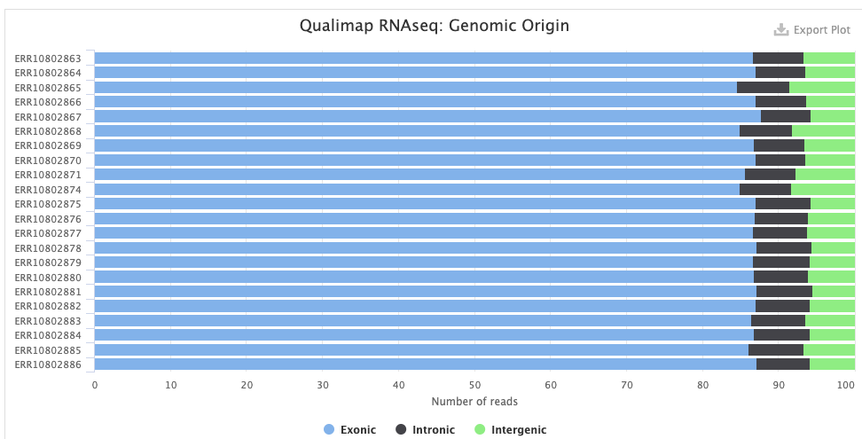
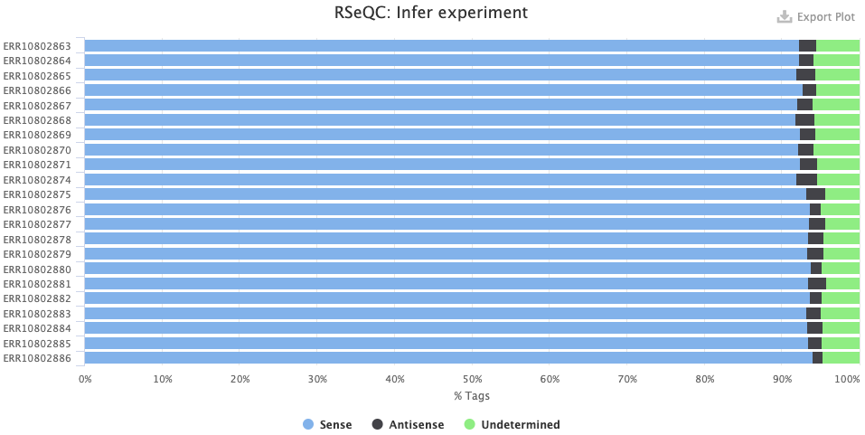

Running an nf-core Nextflow pipeline
Week 6 - part II
Introduction
To learn how to run a Nextflow/nf-core pipeline, we’ll use nf-core rnaseq, which performs a reference-based RNA-seq analysis.
General mechanics of running a pipeline
Running a pipeline like this is a bit different, and more involved, than running a typical piece of bioinformatics software — for example:
The pipeline submits Slurm batch jobs for us, and tries to parallelize as much as possible, spawning many jobs. This also means we need a small “config file” to tell the pipeline how to submit jobs.
We need an installation of Nextflow, and a download of the pipeline files, while the pipeline runs all its constituent tools via separate Singularity containers that it will need to download first1.
Nextflow distinguishes between a final output dir and a “work dir”. All processes will run in various sub-dirs of the work dir, and after each process, output files are copied to the final output dir. Typically, not all outputs are copied, especially for intermediate steps like read trimming — and pipelines have settings to determine what is copied. This distinction is useful at OSC, where a Scratch dir is most suitable at the work dir (fast I/O and lots of storage space), and a Project dir is most suitable as the final output dir.
When you run a pipeline, there is a distinction between:
- Pipeline-specific options to e.g. set inputs and outputs and customize what will be run (there can be 100+ of these for larger pipelines…). These by convention use a double dash
--, e.g.--input. - General Nextflow options to e.g. pass a configuration file for Slurm batch job submissions and determine resuming/rerunning behavior (see below). These always use a single dash, e.g.
-resume.
- Pipeline-specific options to e.g. set inputs and outputs and customize what will be run (there can be 100+ of these for larger pipelines…). These by convention use a double dash
Resuming a pipeline
Finally, we talked about the need for flexible rerunning of parts of a pipeline. Nextflow can do this when we use the -resume option, which will make a pipeline, for example:
- Start where it left off if the previous run failed before finishing, or timed out.
- Only rerun what is needed after adding or removing samples
- Similarly, will rerun only what is needed if we change/replace the reference genome files, which would be all steps that make use of these files and anything downstream of these steps.
1 The nf-core rnaseq pipeline
The nf-core rnaseq pipeline is meant for RNA-seq projects that:
- Attempt to sequence only mRNA while avoiding non-coding RNAs (“mRNA-seq”).
- Do not distinguish between RNA from different cell types (“bulk RNA-seq”).
- Use short reads (≤150 bp) that do not cover full transcripts but do uniquely ID genes.
- Use reference genomes (are reference-based) to associate reads with genes.
- Downstream of this pipeline, such projects typically aim to statistically compare expression between groups of samples, and have multiple biological replicates per group.
That might seem quite specific, but this is by far the most common use RNA-seq use case. The inputs of this pipeline are FASTQ files with raw reads, and reference genome files (assembly & annotation), while the outputs include a gene count table and many “QC outputs”.
There are typically two main parts to the kind of RNA-seq data analysis I just described, but this pipeline only does the first:
- From reads to counts: yes
Generating a count table using the reads & the reference genome. - Count table analysis: no
Differential expression analysis, function enrichment analysis, etc.
That makes sense because the latter part is not nearly as “standardized” as the first. It also does not need much computing power or parallelization, and is best done interactively using a language like R.
The main steps
Let’s take a closer look at the steps in the pipeline:

Read QC and pre-processing
- Read QC (FastQC)
- Adapter and quality trimming (TrimGalore)
- Optional removal of rRNA (SortMeRNA) — off by default, but we will include this
Alignment & quantification
- Alignment to the reference genome/transcriptome (STAR)
- Gene expression quantification (Salmon)
Post-processing, QC, and reporting
- Post-processing alignments: sort, index, mark duplicates (samtools, Picard)
- Alignment/count QC (RSeQC, Qualimap, dupRadar, Preseq, DESeq2)
- Create a QC/metrics report (MultiQC)
This pipeline is quite flexible and you can turn several steps off, add optional steps, and change individual options for most tools that the pipeline runs.
- Optional removal of contaminants (BBSplit)
Map to 1 or more additional genomes whose sequences may be present as contamination, and remove reads that map better to contaminant genomes. - Alternative quantification routes
- Use RSEM instead of Salmon to quantify.
- Skip STAR and perform direct pseudo-alignment & quantification with Salmon.
- Transcript assembly and quantification (StringTie)
While the pipeline is focused on gene-level quantification, it does produce transcript-level counts as well (this is run by default).
2 Getting set up
2.1 How we’ll run the pipeline
The entire pipeline can be run with a single command. But before we can do so, we’ll need to a bunch of prep, such as:
- Activating the software environment and downloading the pipeline files.
- Defining the pipeline’s inputs and outputs, which includes creating a “sample sheet”.
- Creating a small “config file” so Nextflow knows how to submit Slurm batch jobs at OSC.
The main Nextflow process does not need much computing power (a single core with the default 4 GB of RAM will be sufficient) and even though our VS Code shell already runs on a compute and not a login node, we are still better off submitting the main process as a batch job as well, because:
- This process can run for many hours, and we don’t want to risk it disconnecting.
- It’s good to store all the standard output about pipeline progress and so on in a file — this will automatically end up in a Slurm log file if we submit it as a batch job.
Like we’ve done before, we will use both a primary script that will be submitted as a batch job, and a runner script with commands to run interactively including the submission of said batch job:
mkdir -p week06/nfc-rnaseq
cd week06/nfc-rnaseqmkdir scripts run software
touch scripts/nfc-rnaseq.sh run/run.sh2.2 Activating the Conda environment
If you did last week’s exercises, you created a Conda environment with Nextflow and nf-core tools. If not, you can use my Conda environment. We will activate this environment in our runner script because we will first interactively download the pipeline files.
Code to create this Conda environment
module load miniconda3/23.3.1-py310
conda create -y -n nextflow -c bioconda nextflow=23.10.1 nf-core=2.13.1# [Paste this code into the run/run.sh script, then run it in the terminal]
# Activate the Conda environment (or use mine: /fs/ess/PAS0471/jelmer/conda/nextflow)
module load miniconda3/23.3.1-py310
conda activate nextflow-23.10Check that Nextflow and nf-core tools can be run by printing the versions:
# [Run this code directly in the terminal]
nextflow -vnextflow version 23.10.1.5891# [Run this code directly in the terminal]
nf-core --version ,--./,-.
___ __ __ __ ___ /,-._.--~\
|\ | |__ __ / ` / \ |__) |__ } {
| \| | \__, \__/ | \ |___ \`-._,-`-,
`._,._,'
nf-core/tools version 2.13.1 - https://nf-co.re
nf-core, version 2.13.12.3 Downloading the pipeline
We’ll use the nf-core download command to download the rnaseq pipeline’s files.
First, we need to set the environment variable NXF_SINGULARITY_CACHEDIR to tell Nextflow where to store the Singularity containers for all the tools the pipeline runs2. We will use a dir of mine that already has all containers, to save some downloading time3:
# [Paste this code into the run/run.sh script, then run it in the terminal]
# Create an environment variable for the container dir
export NXF_SINGULARITY_CACHEDIR=/fs/ess/PAS0471/containersNext, we’ll run the nf-core download command to download the currently latest version (3.14.0) of the rnaseq pipeline to software/rnaseq, and the associated container files to the previously specified dir:
# [Paste this code into the run/run.sh script, then run it in the terminal]
# Download the nf-core rnaseq pipeline files
nf-core download rnaseq \
--revision 3.14.0 \
--outdir software/nfc-rnaseq \
--compress none \
--container-system singularity \
--container-cache-utilisation amend \
--download-configuration
nf-core download (Click to expand)
--revision: The version of the rnaseq pipeline.--outdir: The dir to save the pipeline definition files.--compress: Whether to compress the pipeline files — we chose not to.--container-system: The type of containers to download. This should always besingularityat OSC, because that’s the only supported type.--container-cache-utilisation: This is a little technical and not terribly interesting, but we usedamend, which will make it check our$NXF_SINGULARITY_CACHEDIRdir for existing containers, and simply download any that aren’t already found there.--download-configuration: This will download some configuration files that we will actually not use, but if you don’t provide this option, it will ask you about it when you run the command.
Also, don’t worry about the following warning, this doesn’t impact the downloading:
WARNING Could not find GitHub authentication token. Some API requests may fail.
Let’s take a quick peek at the dirs and files we just downloaded:
# [Run this code directly in the terminal]
ls software/nfc-rnaseq3_14_0 configs# [Run this code directly in the terminal]
ls software/nfc-rnaseq/3_14_0assets CODE_OF_CONDUCT.md LICENSE nextflow.config subworkflows
bin conf main.nf nextflow_schema.json tower.yml
CHANGELOG.md docs modules pyproject.toml workflows
CITATIONS.md lib modules.json README.md3 Writing a shell script to run the pipeline
In this section, we’ll go through the components of the scripts/nfc-rnaseq.sh script that you’ll later submit as a Slurm batch job. The most important part of this script is the nextflow run command that will run the pipeline.
3.1 Building the nextflow run command
To run the pipeline, use the command nextflow run, followed by the path to the dir you just downloaded:
# [Partial shell script code, don't copy or run]
nextflow run software/nfc-rnaseq/3_14_0After that, there are several required options (see the pipeline’s documentation), which represent the input and output files/dirs for the pipeline:
--input: The path to a “sample sheet” with the paths to FASTQ files (more on that below).--fasta: The path to a reference genome assembly FASTA file — we’ll use the FASTA file we have indata/ref.--gtf: The path to a reference genome annotation file4 — we’ll use the GTF file we have indata/ref.--outdir: The path to the desired output dir for the final pipeline output — this can be whatever you like.
This pipeline has different options for e.g. alignment and quantification. We will stick close to the defaults, which includes alignment with STAR and quantification with Salmon, with one exception: we want to remove reads from ribosomal RNA (this step is skipped by default).
Exercise: Finding the option to remove rRNA
Take a look at the “Parameters” tab on the pipeline’s documentation website:
- Browse through the options for a bit to get a feel for the extent to which you can customize the pipeline.
- Try to find the option to turn on removal of rRNA with SortMeRNA.
Click for the solution
The option we want is--remove_ribo_rna.
We’ll also use several general Nextflow options (note the single dash - notation; pipeline-specific options have --):
-profile: A so-called “profile” — should besingularitywhen running the pipeline with Singularity containers.-work-dir: The dir in which all the pipeline’s jobs/processes will run.-ansi-log false: Change Nextflow’s progress “logging” type to a format that works with Slurm log files5.-resume: Resume the pipeline where it “needs to” (e.g., where it left off) instead of always starting over.
-work-dir and -resume (Click to expand)
work-dir:
The pipeline’s final outputs will go to the --outdir we talked about earlier. But all jobs/processes will run in, and initial outputs will be written to, a so-called -work-dir. After each process finishes, its key output files will then be copied to the final output dir. (There are also several pipeline options to customize what will and will not be copied.)
The distinction between such a work-dir and a final output dir can be very useful on HPC systems like OSC: you can use a scratch dir (at OSC: /fs/scratch/) with lots of storage space and fast I/O as the work-dir, and a backed-up project dir (at OSC: /fs/ess/) as the outdir, which will then not become unnecessarily large.
-resume:
Besides resuming wherever the pipeline left off after an incomplete run (for example: it ran out of time or ran into an error), the -resume option also checks for any changes in input files or pipeline settings.
For example, if you have run the pipeline to completion previously, but rerun it after adding or replace one sample, -resume would make the pipeline only rerun the “single-sample steps” of the pipeline (which is most of them) for that sample as well as all steps that use all samples. Similarly, if you change an option that affects one of the first processes in the pipeline, the entire pipeline may be rerun, whereas if you change an option that only affects the last process, then only that last process would be rerun.
This option won’t make any difference when we run the pipeline for the first time, since there is nothing to resume. Nextflow will even give a warning along these lines, but this is not a problem.
With all above-mentioned options, your final nextflow run command is:
# [Partial shell script code, don't copy or run]
nextflow run software/nfc-rnaseq/3_14_0 \
--input "$samplesheet" \
--fasta "$fasta" \
--gtf "$gtf" \
--outdir "$outdir" \
--remove_ribo_rna \
-work-dir "$outdir"/raw \
-profile singularity \
-ansi-log false \
-resumeThis uses several variables (e.g. "$samplesheet") — these will enter the script via command-line arguments.
3.2 Creating an OSC configuration file
We want the pipeline to submit Slurm batch jobs for us. We have to tell it to do this, and how, using a configuration (config) file. There are multiple ways of storing this file and telling Nextflow about it — the one we’ll use is to simply create a file nextflow.config in the dir from which we submit the nextflow run command: Nextflow will automatically detect and parse such a file.
We’ll keep this file as simple as possible, specifying only the “executor” program (in our case: Slurm) and the OSC project to use:
echo "
process.executor = 'slurm'
process.clusterOptions='--account=PAS2700'
" > nextflow.config3.3 The final script
Below is the full code for the script, in which I also added:
- Our standard shell script header lines.
#SBATCHoptions: note that these are only for the “main” Nextflow job, not for the jobs that Nextflow itself will submit! So we ask for quite a bit of time6, but we don’t need more than the default 1 core and 4 GB of RAM.- Some
echoreporting of arguments/variables, printing the date, etc.
Open your scripts/nfc-rnaseq.sh script and paste the following into it:
#!/bin/bash
#SBATCH --account=PAS2700
#SBATCH --time=6:00:00
#SBATCH --mail-type=END,FAIL
#SBATCH --output=slurm-nfc_rnaseq-%j.out
# Settings and constants
WORKFLOW_DIR=software/nfc-rnaseq/3_14_0
# Load the Nextflow Conda environment
module load miniconda3/23.3.1-py310
conda activate /fs/ess/PAS0471/jelmer/conda/nextflow
export NXF_SINGULARITY_CACHEDIR=/fs/ess/PAS0471/containers
# Strict Bash settings
set -euo pipefail
# Process command-line arguments
samplesheet=$1
fasta=$2
gtf=$3
outdir=$4
# Report
echo "Starting script nfc-rnaseq.sh"
date
echo "Samplesheet: $samplesheet"
echo "Reference FASTA: $fasta"
echo "Reference GTF: $gtf"
echo "Output dir: $outdir"
echo
# Create the output dir
mkdir -p "$outdir"
# Create the config file
echo "
process.executor = 'slurm'
process.clusterOptions='--account=PAS2700'
" > nextflow.config
# Run the workflow
nextflow run "$WORKFLOW_DIR" \
--input "$samplesheet" \
--fasta "$fasta" \
--gtf "$gtf" \
--outdir "$outdir" \
--remove_ribo_rna \
-work-dir "$outdir"/raw \
-profile singularity \
-ansi-log false \
-resume
# Report
echo "Done with script nfc-rnaseq.sh"
dateExercise: Take a close look at the script
Go through your complete scripts/nfc-rnaseq.sh script and see if you understand everything that’s going on in there. Ask if you’re confused about anything!
4 Running the pipeline
We will now switch back to the run/run.sh script to add the code to submit the script. But we’ll have to create a sample sheet first.
4.1 Preparing the sample sheet
This pipeline requires a “sample sheet” as one of its inputs. In the sample sheet, you provide the paths to your FASTQ files and the so-called “strandedness” of your RNA-Seq library.
During RNA-Seq library prep, information about the directionality of the original RNA transcripts can be retained (resulting in a “stranded” library) or lost (resulting in an “unstranded” library: specify unstranded in the sample sheet).
In turn, stranded libraries can prepared either in reverse-stranded (reverse, by far the most common) or forward-stranded (forward) fashion. For more information about library strandedness, see this page.
The pipeline also allows for a fourth option: auto, in which case the strandedness is automatically determined at the start of the pipeline by pseudo-mapping a small proportion of the data with Salmon.
The sample sheet should be a plain-text comma-separated values (CSV) file. Here is the example file from the pipeline’s documentation:
sample,fastq_1,fastq_2,strandedness
CONTROL_REP1,AEG588A1_S1_L002_R1_001.fastq.gz,AEG588A1_S1_L002_R2_001.fastq.gz,auto
CONTROL_REP1,AEG588A1_S1_L003_R1_001.fastq.gz,AEG588A1_S1_L003_R2_001.fastq.gz,auto
CONTROL_REP1,AEG588A1_S1_L004_R1_001.fastq.gz,AEG588A1_S1_L004_R2_001.fastq.gz,autoSo, we need a header row with column names, then one row per sample, and the following columns:
- Sample ID (we will simply use the file name part that is shared by R1 and R2).
- R1 FASTQ file path (including the dir, unless these files are in your working dir).
- R2 FASTQ file path (idem).
- Strandedness:
unstranded,reverse,forward, orauto— this data is forward-stranded, so we’ll useforward.
You can create this file in several ways — we will do it here with a helper script that comes with the pipeline7:
First, define an output dir (this will also be the output dir for the pipeline), and the sample sheet file name:
# [Paste this into run/run.sh and then run it in the terminal] # Define the output dir and sample sheet file name outdir=results/nfc-rnaseq samplesheet="$outdir"/nfc_samplesheet.csv mkdir -p "$outdir"Next, run that helper script, specifying the strandedness of our data, the suffices of the R1 and R2 FASTQ files, and as arguments at the end, the input FASTQ dir (
data/fastq) and the output file ($samplesheet):# [Paste this into run/run.sh and then run it in the terminal] # Create the sample sheet for the nf-core pipeline python3 software/nfc-rnaseq/3_14_0/bin/fastq_dir_to_samplesheet.py \ --strandedness forward \ --read1_extension "_R1.fastq.gz" \ --read2_extension "_R2.fastq.gz" \ data/fastq \ "$samplesheet"Finally, check the contents of your newly created sample sheet file:
# [Run this directly in the terminal] cat "$samplesheet"sample,fastq_1,fastq_2,strandedness ERR10802863,data/fastq/ERR10802863_R1.fastq.gz,data/fastq/ERR10802863_R2.fastq.gz,forward ERR10802864,data/fastq/ERR10802864_R1.fastq.gz,data/fastq/ERR10802864_R2.fastq.gz,forward ERR10802865,data/fastq/ERR10802865_R1.fastq.gz,data/fastq/ERR10802865_R2.fastq.gz,forward ERR10802866,data/fastq/ERR10802866_R1.fastq.gz,data/fastq/ERR10802866_R2.fastq.gz,forward ERR10802867,data/fastq/ERR10802867_R1.fastq.gz,data/fastq/ERR10802867_R2.fastq.gz,forward ERR10802868,data/fastq/ERR10802868_R1.fastq.gz,data/fastq/ERR10802868_R2.fastq.gz,forward ERR10802869,data/fastq/ERR10802869_R1.fastq.gz,data/fastq/ERR10802869_R2.fastq.gz,forward ERR10802870,data/fastq/ERR10802870_R1.fastq.gz,data/fastq/ERR10802870_R2.fastq.gz,forward ERR10802871,data/fastq/ERR10802871_R1.fastq.gz,data/fastq/ERR10802871_R2.fastq.gz,forward ERR10802874,data/fastq/ERR10802874_R1.fastq.gz,data/fastq/ERR10802874_R2.fastq.gz,forward ERR10802875,data/fastq/ERR10802875_R1.fastq.gz,data/fastq/ERR10802875_R2.fastq.gz,forward ERR10802876,data/fastq/ERR10802876_R1.fastq.gz,data/fastq/ERR10802876_R2.fastq.gz,forward ERR10802877,data/fastq/ERR10802877_R1.fastq.gz,data/fastq/ERR10802877_R2.fastq.gz,forward ERR10802878,data/fastq/ERR10802878_R1.fastq.gz,data/fastq/ERR10802878_R2.fastq.gz,forward ERR10802879,data/fastq/ERR10802879_R1.fastq.gz,data/fastq/ERR10802879_R2.fastq.gz,forward ERR10802880,data/fastq/ERR10802880_R1.fastq.gz,data/fastq/ERR10802880_R2.fastq.gz,forward ERR10802881,data/fastq/ERR10802881_R1.fastq.gz,data/fastq/ERR10802881_R2.fastq.gz,forward ERR10802882,data/fastq/ERR10802882_R1.fastq.gz,data/fastq/ERR10802882_R2.fastq.gz,forward ERR10802883,data/fastq/ERR10802883_R1.fastq.gz,data/fastq/ERR10802883_R2.fastq.gz,forward ERR10802884,data/fastq/ERR10802884_R1.fastq.gz,data/fastq/ERR10802884_R2.fastq.gz,forward ERR10802885,data/fastq/ERR10802885_R1.fastq.gz,data/fastq/ERR10802885_R2.fastq.gz,forward ERR10802886,data/fastq/ERR10802886_R1.fastq.gz,data/fastq/ERR10802886_R2.fastq.gz,forward
4.2 Submitting your shell script
As a last preparatory step, save the paths of the reference genome files in variables:
# [Paste this into run/run.sh and then run it in the terminal]
# Define the reference genome files
fasta=data/ref/GCF_016801865.2.fna
gtf=data/ref/GCF_016801865.2.gtfBefore you submit the script, check that all variables have been assigned by prefacing the command with echo:
# [ Run this directly in the terminal]
echo sbatch scripts/nfc-rnaseq.sh "$samplesheet" "$fasta" "$gtf" "$outdir"sbatch scripts/nfc-rnaseq.sh results/nfc-rnaseq/nfc_samplesheet.csv data/ref/GCF_016801865.2.fna data/ref/GCF_016801865.2.gtf results/nfc-rnaseqIf so, you are ready to submit the script as a batch job:
# [Paste this into run/run.sh and then run it in the terminal]
# Submit the script to run the pipeline as a batch job
sbatch scripts/nfc-rnaseq.sh "$samplesheet" "$fasta" "$gtf" "$outdir"Submitted batch job 27767854
Not sure your run.sh script is complete, or getting errors? Click for its intended content.
TODO
4.3 Checking the pipeline’s progress
Let’s check whether your job has started running, and if so, whether Nextflow has already spawned jobs:
# [Run this directly in the terminal]
squeue -u $USER -lMon Mar 25 12:13:38 2024
JOBID PARTITION NAME USER STATE TIME TIME_LIMI NODES NODELIST(REASON)
27767854 serial-40 nfc-rnas jelmer RUNNING 1:33 6:00:00 1 p0219In the example output above, the only running job is the one we directly submitted, i.e. the main Nextflow process. The NAME column is the script’s name, nfc-rnaseq.sh (truncated to nfc-rnas).
squeue output that includes Nextflow-submitted jobs (Click to expand)
The top job, with partial name nf-NFCOR, is a job that’s been submitted by Nextflow:
squeue -u $USER -lMon Mar 25 13:14:53 2024
JOBID PARTITION NAME USER STATE TIME TIME_LIMI NODES NODELIST(REASON)
27767861 serial-40 nf-NFCOR jelmer RUNNING 5:41 16:00:00 1 p0053
27767854 serial-40 nfc_rnas jelmer RUNNING 1:03:48 6:00:00 1 p0219Unfortunately, the columns in the output above are quite narrow, so it’s not possible to see which step of the pipeline is being run by that job. The following (awful-looking!) code can be used to make that column much wider, so you can see the job’s full name which makes clear which step is being run (rRNA removal with SortMeRNA):
squeue -u $USER --format="%.9i %.9P %.60j %.8T %.10M %.10l %.4C %R %.16V"Mon Mar 25 13:15:05 2024
JOBID PARTITION NAME STATE TIME TIME_LIMIT CPUS NODELIST(REASON) SUBMIT_TIME
27767861 serial-40 nf-NFCORE_RNASEQ_RNASEQ_SORTMERNA_(SRR27866691_SRR27866691) RUNNING 5:55 16:00:00 12 p0053 2024-03-23T09:37
27767854 serial-40 nfc_rnaseq RUNNING 1:04:02 6:00:00 1 p0219 2024-03-23T09:36You might also catch the pipeline while there are many more jobs running, e.g.:
Mon Mar 25 13:59:50 2024
JOBID PARTITION NAME USER STATE TIME TIME_LIMI NODES NODELIST(REASON)
27823107 serial-40 nf-NFCOR jelmer RUNNING 0:13 16:00:00 1 p0091
27823112 serial-40 nf-NFCOR jelmer RUNNING 0:13 16:00:00 1 p0119
27823115 serial-40 nf-NFCOR jelmer RUNNING 0:13 16:00:00 1 p0055
27823120 serial-40 nf-NFCOR jelmer RUNNING 0:13 16:00:00 1 p0055
27823070 serial-40 nf-NFCOR jelmer RUNNING 0:43 16:00:00 1 p0078
27823004 serial-40 nfc-rnas jelmer RUNNING 2:13 6:00:00 1 p0146
27823083 serial-40 nf-NFCOR jelmer RUNNING 0:37 16:00:00 1 p0078
27823084 serial-40 nf-NFCOR jelmer RUNNING 0:37 16:00:00 1 p0096
27823085 serial-40 nf-NFCOR jelmer RUNNING 0:37 16:00:00 1 p0096
27823086 serial-40 nf-NFCOR jelmer RUNNING 0:37 16:00:00 1 p0115
27823087 serial-40 nf-NFCOR jelmer RUNNING 0:37 16:00:00 1 p0115
27823088 serial-40 nf-NFCOR jelmer RUNNING 0:37 16:00:00 1 p0123
27823089 serial-40 nf-NFCOR jelmer RUNNING 0:37 16:00:00 1 p0123
27823090 serial-40 nf-NFCOR jelmer RUNNING 0:37 16:00:00 1 p0057
27823091 serial-40 nf-NFCOR jelmer RUNNING 0:37 16:00:00 1 p0057
27823092 serial-40 nf-NFCOR jelmer RUNNING 0:37 16:00:00 1 p0058
27823093 serial-40 nf-NFCOR jelmer RUNNING 0:37 16:00:00 1 p0058
27823095 serial-40 nf-NFCOR jelmer RUNNING 0:37 16:00:00 1 p0118
27823099 serial-40 nf-NFCOR jelmer RUNNING 0:37 16:00:00 1 p0118
27823103 serial-40 nf-NFCOR jelmer RUNNING 0:37 16:00:00 1 p0119
27823121 serial-48 nf-NFCOR jelmer RUNNING 0:13 16:00:00 1 p0625
27823122 serial-48 nf-NFCOR jelmer RUNNING 0:13 16:00:00 1 p0744
27823123 serial-48 nf-NFCOR jelmer RUNNING 0:13 16:00:00 1 p0780
27823124 serial-48 nf-NFCOR jelmer RUNNING 0:13 16:00:00 1 p0780You can also keep an eye on the pipeline’s progress, and see if there are any errors, by checking the Slurm log file — the top of the file should look like this:
# You will have a different job ID - replace as appropriate or use Tab completion
less slurm-nfc_rnaseq-27767861.outStarting script nfc-rnaseq.sh
Mon Mar 25 13:01:30 EDT 2024
Samplesheet: results/nfc-rnaseq/nfc_samplesheet.csv
Reference FASTA: data/ref/GCF_016801865.2.fna
Reference GTF: data/ref/GCF_016801865.2.gtf
Output dir: results/nfc-rnaseq
N E X T F L O W ~ version 23.10.1
WARN: It appears you have never run this project before -- Option `-resume` is ignored
Launching `software/nfc-rnaseq/3_14_0/main.nf` [curious_linnaeus] DSL2 - revision: 746820de9b
WARN: ~~~~~~~~~~~~~~~~~~~~~~~~~~~~~~~~~~~~~~~~~~~~~~~~~~~~~~~~~~~~~~~~~~~~~~
Multiple config files detected!
Please provide pipeline parameters via the CLI or Nextflow '-params-file' option.
Custom config files including those provided by the '-c' Nextflow option can be
used to provide any configuration except for parameters.
Docs: https://nf-co.re/usage/configuration#custom-configuration-files
~~~~~~~~~~~~~~~~~~~~~~~~~~~~~~~~~~~~~~~~~~~~~~~~~~~~~~~~~~~~~~~~~~~~~~~~~~~~
------------------------------------------------------
,--./,-.
___ __ __ __ ___ /,-._.--~'
|\ | |__ __ / ` / \ |__) |__ } {
| \| | \__, \__/ | \ |___ \`-._,-`-,
`._,._,'
nf-core/rnaseq v3.14.0
------------------------------------------------------
Core Nextflow options
runName : curious_linnaeus
containerEngine : singularity
[...output truncated...]The warnings about -resume and config files shown above can be ignored. Also, some of this output has nice colors that was not shown above, so here is a screenshot:

In the Slurm log file, pipeline progress is shown in the following way — you can only see which jobs are being submitted, not when they finish8:
[e5/da8328] Submitted process > NFCORE_RNASEQ:RNASEQ:PREPARE_GENOME:GTF_FILTER (GCF_016801865.2.fna)
[b5/9427a1] Submitted process > NFCORE_RNASEQ:RNASEQ:PREPARE_GENOME:CUSTOM_GETCHROMSIZES (GCF_016801865.2.fna)
[05/e0e09f] Submitted process > NFCORE_RNASEQ:RNASEQ:FASTQ_FASTQC_UMITOOLS_TRIMGALORE:TRIMGALORE (ERR10802863)
[25/a6c2f5] Submitted process > NFCORE_RNASEQ:RNASEQ:FASTQ_FASTQC_UMITOOLS_TRIMGALORE:FASTQC (ERR10802863)
[24/cef9a0] Submitted process > NFCORE_RNASEQ:RNASEQ:FASTQ_FASTQC_UMITOOLS_TRIMGALORE:TRIMGALORE (ERR10802864)
[b1/9cfa7e] Submitted process > NFCORE_RNASEQ:RNASEQ:FASTQ_FASTQC_UMITOOLS_TRIMGALORE:FASTQC (ERR10802864)
[c4/3107c1] Submitted process > NFCORE_RNASEQ:RNASEQ:FASTQ_FASTQC_UMITOOLS_TRIMGALORE:TRIMGALORE (ERR10802865)
[7e/92ec89] Submitted process > NFCORE_RNASEQ:RNASEQ:FASTQ_FASTQC_UMITOOLS_TRIMGALORE:TRIMGALORE (ERR10802866)
[01/f7ccfb] Submitted process > NFCORE_RNASEQ:RNASEQ:FASTQ_FASTQC_UMITOOLS_TRIMGALORE:FASTQC (ERR10802866)
[42/4b4da2] Submitted process > NFCORE_RNASEQ:RNASEQ:FASTQ_FASTQC_UMITOOLS_TRIMGALORE:TRIMGALORE (ERR10802868)
[8c/fe6ca5] Submitted process > NFCORE_RNASEQ:RNASEQ:FASTQ_FASTQC_UMITOOLS_TRIMGALORE:TRIMGALORE (ERR10802867)
[e6/a12ec8] Submitted process > NFCORE_RNASEQ:RNASEQ:FASTQ_FASTQC_UMITOOLS_TRIMGALORE:FASTQC (ERR10802867)
[2e/f9059d] Submitted process > NFCORE_RNASEQ:RNASEQ:FASTQ_FASTQC_UMITOOLS_TRIMGALORE:FASTQC (ERR10802865)
[de/2735d1] Submitted process > NFCORE_RNASEQ:RNASEQ:FASTQ_FASTQC_UMITOOLS_TRIMGALORE:FASTQC (ERR10802868)You should also see the following warning among the job submissions (Click to expand)
This warning can be ignored, the “Biotype QC” is not important and this information is indeed simply missing from our GTF file, there is nothing we can do about that.
WARN: ~~~~~~~~~~~~~~~~~~~~~~~~~~~~~~~~~~~~~~~~~~~~~~~~~~~~~~~~~~~~~~~~~~~~~~
Biotype attribute 'gene_biotype' not found in the last column of the GTF file!
Biotype QC will be skipped to circumvent the issue below:
https://github.com/nf-core/rnaseq/issues/460
Amend '--featurecounts_group_type' to change this behaviour.
~~~~~~~~~~~~~~~~~~~~~~~~~~~~~~~~~~~~~~~~~~~~~~~~~~~~~~~~~~~~~~~~~~~~~~~~~~~~But if errors occur, they are reported in this file, and there is also a message when the entire pipeline has finished:
[28/79e801] Submitted process > NFCORE_RNASEQ:RNASEQ:BEDGRAPH_BEDCLIP_BEDGRAPHTOBIGWIG_FORWARD:UCSC_BEDGRAPHTOBIGWIG (ERR10802864)
[e0/ba48c9] Submitted process > NFCORE_RNASEQ:RNASEQ:BEDGRAPH_BEDCLIP_BEDGRAPHTOBIGWIG_REVERSE:UCSC_BEDGRAPHTOBIGWIG (ERR10802864)
[62/4f8c0d] Submitted process > NFCORE_RNASEQ:RNASEQ:MULTIQC (1)
-[nf-core/rnaseq] Pipeline completed successfully -
Done with script nfc-rnaseq.sh
Mon Mar 25 14:09:52 EDT 20245 The pipeline’s outputs
You pipeline run may finish in as little as 15-30 minutes with our small test data set, but this can vary substantially, mostly due to variation in Slurm queue-ing times (the pipeline makes quite large resource requests!).
Once it has finished, you can take a look at the files and dirs in the specified output dir:
ls -lh results/nfc-rnaseqtotal 83K
drwxr-xr-x 2 jelmer PAS0471 16K Mar 25 13:02 fastqc
drwxr-xr-x 2 jelmer PAS0471 4.0K Mar 25 12:58 logs
drwxr-xr-x 3 jelmer PAS0471 4.0K Mar 25 13:14 multiqc
-rw-r--r-- 1 jelmer PAS0471 2.0K Mar 25 19:55 nfc_samplesheet.csv
drwxr-xr-x 2 jelmer PAS0471 4.0K Mar 25 13:14 pipeline_info
drwxr-xr-x 248 jelmer PAS0471 16K Mar 25 13:10 raw
drwxr-xr-x 2 jelmer PAS0471 4.0K Mar 25 13:06 sortmerna
drwxr-xr-x 33 jelmer PAS0471 16K Mar 25 13:12 star_salmon
drwxr-xr-x 3 jelmer PAS0471 4.0K Mar 25 13:02 trimgaloreThe two most imporant outputs are:
The MultiQC report (
<outdir>/multiqc/star_salmon/multiqc_report.html): this has lots of QC summaries of the data, both the raw data and the alignments, and even a gene expression PCA plot.The gene count table (
<outdir>/star_salmon/salmon.merged.gene_counts_length_scaled.tsv): This is what you would use for downstream analysis such as differential expression and functional enrichment analysis.
To download the MultiQC HTML file at results/nfc-rnaseq/multiqc/star_salmon/multiqc_report.html, find this file in the VS Code explorer (file browser) on the left, right-click on it, and select Download....
You can download it to any location on your computer. Then find the file on your computer and click on it to open it — it should be opened in your browser.
You can find a copy of the MultiQC report on this website, here. Go ahead and open that in a separate browser tab. There’s a lot of information in the report!
6 Self-study material: A closer look at the output
If you’re interested in RNA-seq data analysis, you may want to take a closer look at the outputs of the pipeline, especially MultiQC report.
6.1 The MultiQC report
Here are some items in that report to pay particular attention to, with example figures from this data set:
The General Statistics table (the first section) is very useful, with the following notes:
Most of the table’s content is also in later graphs, but the table allows for comparisons across metrics.
The
%rRNA(% of reads identified as rRNA and removed by SortMeRNA) can only be found in this table.It’s best to hide the columns with statistics from Samtools, which can be confusing if not downright misleading: click on “Configure Columns” and uncheck all the boxes for stats with Samtools in their name.
Some stats are for R1 and R2 files only, and some are for each sample as a whole. Unfortunately, this means you get 3 rows per sample in the table.
- The Qualimap > Genomic origin of reads plot shows, for each sample, the proportion of reads mapping to exonic vs. intronic vs. intergenic regions. This is an important QC plot: the vast majority of your reads should be exonic9.

- The STAR > Alignment Scores plot shows, for each sample, the percentage of reads that was mapped. Note that “Mapped to multiple loci” reads are also included in the final counts, and that “Unmapped: too short” merely means unmapped, really, and not that the reads were too short.

- FastQC checks your FASTQ files, i.e. your data prior to alignment. There are FastQC plots both before and after trimming with TrimGalore/Cutadapt. The most important FastQC modules are:
- Sequence Quality Histograms — You’d like the mean qualities to stay in the “green area”.
- Per Sequence GC Content — Secondary peaks may indicate contamination.
- Adapter Content — Any adapter content should be gone in the post-trimming plot.
Exercise: Interpreting FastQC results in the MultiQC report
Take a look at the three FastQC modules discussed above, both before and after trimming.
- Has the base quality improved after trimming, and does this look good?
Click to see the answer
- Pre-trimming graph: The qualities are good overall, but there is more variation that what is usual, and note the poorer qualities in the first 7 or so bases. There is no substantial decline towards the end of the read as one often sees with Illumina data, but this is expected given that the reads are only 75 bp.
- Post-trimming graph: The qualities have clearly improved. The first 7 or so bases remain of clearly poorer quality, on average.
- Do you have any idea what’s going with the pre-trimming GC content distribution? What about after trimming — does this look good or is there reason to worry?
Click to see the answer
- The pre-trimming GC content is very odd but this is mostly due to a high number of reads with zero and near-zero percent GC content. These are likely reads with only Ns. There are also some reads with near-hundred percent GC content. These are likely artifactual G-only reads that NextSeq/NovaSeq machines can produce.

- After trimming, things look a lot better but there may be contamination here, given the weird “shoulder” at 30-40% GC.

- Do you know what the “adapters” that FastQC found pre-trimming are? Were these sequences removed by the trimming?
Click to see the answer
- Pre-trimming, there seem to be some samples with very high adapter content throughout the read. This doesn’t make sense for true adapters, because these are usually only found towards the end of the read, when the read length is longer than the DNA fragment length. If you hover over the lines, you’ll see it says “polyg”. These are artifactual G-only reads that NextSeq/NovaSeq can produce, especially in the reverse reads — and you can see that all of the lines are for reverse-read files indeed.
- Post-trimming, no adapter content was found.
- The Qualimap > Gene Coverage Profile plot. This shows average read-depth across the position of genes/transcripts (for all genes together), which helps to assess the amount of RNA degradation. For poly-A selected libraries, RNA molecules “begin” at the 3’ end (right-hand side of the graph), so the more degradation there is, the more you expect there to be a higher read-depth towards the 3’ end compared to the 5’ end. (Though note that sharp decreases at the very end on each side are expected.)

indicating some RNA degradation.
- The RSeqQC > Infer experiment (library strandedness) plot. If your library is:
- Unstranded, there should be similar percentages of Sense and Antisense reads.
- Forward-stranded, the vast majority of reads should be Sense.
- Reverse-stranded, the vast majority of reads should be Antisense.

- The STAR_SALMON DESeq2 PCA plot is from a Principal Component Analysis (PCA) run on the final gene count table, thus showing overall patterns of gene expression similarity among samples.

6.2 The gene count table
The gene count table has one row for each gene and one column for each sample, with the first two columns being the gene_id and gene_name10. Each cell’s value contains the read count estimate for a specific gene in a specific sample:
# [Paste this into the run/run.sh script and run it in the terminal]
# Take a look at the count table:
# ('column -t' lines up columns, and less's '-S' option turns off line wrapping)
counts=results/nfc-rnaseq/star_salmon/salmon.merged.gene_counts_length_scaled.tsv
column -t "$counts" | less -Sgene_id gene_name ERR10802863 ERR10802864 ERR10802865 ERR10802866 ERR10802867 ERR10802868
ATP6 ATP6 163.611027228009 178.19903533081 82.1025390726658 307.649552934133 225.78249209207 171.251589309856
ATP8 ATP8 0 1.01047333891691 0 0 0 0
COX1 COX1 1429.24769032452 2202.82009602881 764.584344577622 2273.6965332904 2784.47391614249 2000.51277019854
COX2 COX2 116.537361366535 175.137972566817 54.0166352459629 256.592955351283 193.291937038438 164.125833130119
COX3 COX3 872.88670991359 1178.29247734231 683.167933227141 1200.01735304529 1300.3853323715 1229.11746824104
CYTB CYTB 646.028108528182 968.256051104547 529.393909319439 1025.23768317788 1201.46662840336 842.533209911258
LOC120412322 LOC120412322 0 0 0 0 0.995135178345792 0.996805450081561
LOC120412324 LOC120412324 37.8326244586681 20.9489661184365 27.6702324729125 48.6417838830061 22.8313729348804 36.87899862428
LOC120412325 LOC120412325 3.21074365394071 2.10702898851342 4.40315394778926 5.47978997387391 4.33241716734803 4.23386924919438
LOC120412326 LOC120412326 0 0 0 0 0 0
LOC120412327 LOC120412327 37.8206758601034 35.9063291323018 38.517771617566 27.7802608986967 37.6979028802121 32.885944667709
LOC120412328 LOC120412328 35.0080600370267 20.0019192467143 23.9260736995594 30.0191332346116 21.0383665366408 28.9844776623531
LOC120412329 LOC120412329 121.777922287929 112.794544755113 131.434181046282 127.753086659103 114.864750589664 131.589608063253
LOC120412330 LOC120412330 42.8505448763697 28.9442284428204 36.6285174684674 46.7310765909945 42.7633834468768 26.9265243413636
LOC120412331 LOC120412331 11.013179311581 9.00559907892481 12.9836833055803 13.029954361225 7.02624958751718 16.000552787954
LOC120412332 LOC120412332 12.1055360835441 26.1231316926989 21.2767913384733 18.2783703626438 26.4932540325187 22.098808637857
LOC120412333 LOC120412333 19.1159998132169 17.0558058070299 12.0965688236319 14.1510477997588 15.2033452089903 9.02624985028677
LOC120412334 LOC120412334 9.01332125155807 3.00232591636489 5.99566364212933 11.0306919231504 8.03448732510427 11.0022053123759
# [...output truncated...]The workflow outputs several versions of the count table11, but the one with gene_counts_length_scaled is the one we want:
gene_countsas opposed totranscript_countsfor counts that are summed across transcripts for each gene.lengthfor estimates that have been adjusted to account for between-sample differences in mean transcript length (longer transcripts would be expected to produce more reads in sequencing).scaledfor estimates that have been scaled back using the “library sizes”, per-sample total read counts.
Footnotes
Conda environments can also be used, but containers are recommended, and are what we will use.↩︎
These kinds of settings are more commonly specified with command options, but somewhat oddly, this is the only way we can specify that here.↩︎
But if you want to run a pipeline yourself for your own research, make sure to use a dir that you have permissions to write to.↩︎
Preferably in GTF (
.gtf) format, but the pipeline can accept GFF/GFF3 (.gff/.gff3) format files as well.↩︎The default logging does not work well the output goes to a text file, as it will in our case because we will submit the script with the Nextflow command as a Slurm batch job.↩︎
And for a run of a full data set, you may want to ask even more, e.g. 12-24 hours.↩︎
The box below shows an alternative method with Unix shell commands↩︎
The default Nextflow logging (without
-ansi-log false) does show when jobs finish, but this would result in very messy output in a Slurm log file.↩︎A lot of intronic content may indicate that you have a lot of pre-mRNA in your data; this is more common when your library prep used rRNA depletion instead of poly-A selection. A lot of intergenic content may indicate DNA contamination. Poor genome annotation quality may also contribute to a low percentage of exonic reads. The RSeQC > Read Distribution plot will show this with even more categories, e.g. separately showing UTRs.↩︎
Which happen to be the same here, but these are usually different.↩︎
And each version in two formats:
.rds(a binary R object file type) and.tsv.↩︎